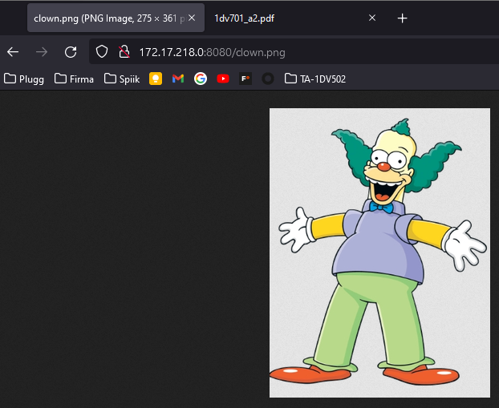
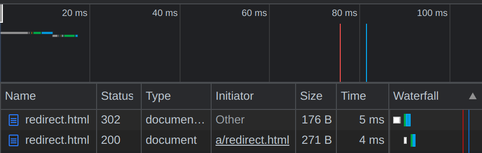
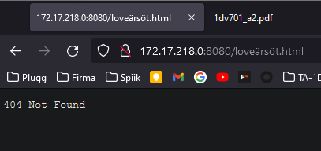

A request to a named page.
Author: Christoffer Eid
Author: Olof Enström
Semester: Spring 2022
Email: ce223af@student.lnu.se
Email: oe222fh@student.lnu.se
A request to a named page.

A request to an image.

A request to a directory.
During the POST if an unsupported filetype is uploaded a BAD REQUEST HTTP status will be sent. This exception is thrown by FileType.fromString().
If an Input output error ever occurs during the course of the thread or the main program an error message will be printed. In the case of the thread the socket, output/input streams and thread itself will be closed.
If the first argument; ´port number´ does not contain a parsable Integer an error message is printed and the program shuts down.

Navigating to the URL /a/redirect.html the 302 Found response code will be triggered with a Location header containing /redirect.html. This redirects you to /redirect.html with a 200 OK response.

The 404 Not Found response code is triggered by making a request to any file or directory that does not exist in the public folder.

Make any request other than the supported GET or POST and the 500 Internal Server Error will be triggered.
For the image parsing we are looking for the specific start bytes of any supported image formats (PNG and JPG currently). This indicates the start set of bytes to write to the image. We then do the same for the end bytes. To look for the start and end sequence we use an algorithm for pattern matching. At first we wrote our own algorithm. However, due to bad performnence, we ended up using the Knuth-Morris-Pratt algorithm.